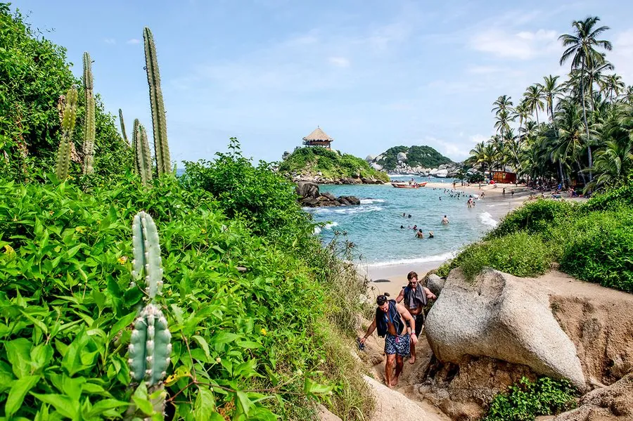

Dag 16–17 · Nationaal Park · Jungle & Paradijselijk Strand
Het park is open op jullie dagen (de jaarlijkse sluitingen zijn 1–15 feb, 1–15 juni en 19 okt–2 nov). Wat wél telt: Colombia vraagt een gelekoortsvaccinatiebewijs voor Tayrona, de Sierra Nevada (Minca) en La Guajira (Palomino) — neem het gele boekje mee, naast je originele paspoort. Entree 2026 voor buitenlanders: COP 81.000 laagseizoen / COP 96.500 hoogseizoen (±€18–22) + COP 7.000 verplichte verzekering p.p. Begin december valt in de kerstvakantie, dus reken op het hoge tarief. Cash of kaart aan de ingang; max. 6.900 bezoekers per dag — vroeg komen.
Kort: El Zaíno is sinds 3 juli 2026 weer open (samen met Calabazo, Palangana en Bahía Concha). De kustweg is open, maar ging dit jaar enkele keren 1–2 dagen dicht na militaire acties tegen de lokale gewapende groep. Reken erop dat het goed gaat, maar boek flexibel en check vlak vooraf.
Belangrijk: de incidenten waren gericht tegen leger en bussen, niet tegen toeristen. Het risico voor jullie is vooral vastzitten, niet geweld.
Bronnen: Parques Nacionales 3-7-2026 · Semana 16-6 · La Regional 17-6 · El Heraldo 22-9 · El Callejero 7-10 · FCDO · Stand: 11 oktober 2026.
Terug naar de bushalte onderaan Minca (zelfde halte waar je aankwam). Bus naar Santa Marta, dan verder naar Tayrona. Neem contact op met het Quetzal Dorado Eco-Lodge voor transportadvies specifiek voor hun locatie.
📖 Lees meer: 🌴 Tayrona Park →
Het park combineert tropisch regenwoud met het Caribisch Zeekust — de Andes-uitlopers dalen letterlijk in de zee. Wandelingen door de jungle leiden naar geïsoleerde stranden zoals Cabo San Juan, La Piscina en Arrecifes.
Meenemen: Paspoort (verplicht, geen kopie), zwemgerei, voldoende water (2L+ p.p.), zonnecrème, muggenspray, lichte wandelschoenen of slippers die nat mogen worden.
Hoofdroute (El Zaíno → Cañaveral → Arrecifes → Cabo San Juan):
Route heen en terug: ±9 km · ~4u wandelen, plus strandtijd. Vanaf El Zaíno rijdt een shuttle (5 km) naar Cañaveral, waar het pad begint.
Zwemmen: Volg altijd de vlaggen: groen = veilig, geel = opgelet, rood = verboden.
Wildlife: Kansen op miereneters, howler monkeys, kleurrijke vogels, agouts en zelfs capibara's.
Vroeg het park in: shuttle van El Zaíno naar Cañaveral, dan te voet over het jungle-pad langs Arrecifes (kijken, niet zwemmen) en La Piscina (wél zwemmen) naar Cabo San Juan — anderhalf tot twee uur. Klim de tien minuten naar El Mirador, de rieten hut op de rotspunt tussen de twee baaien, en neem dan de rest van de dag voor zwemmen, een hangmat en de lunch bij het restaurantje op het strand. Pueblito, de ruïnes erboven, is gesloten voor bezoekers — dat hoef je dus niet mee te rekenen.
Start: bij de ingang om 8u, als het park opent. Vroeg = minder hitte, minder volk en de beste kans op apen en vogels langs het pad.
Schoenen: het pad is rotsig en bij regen glibberig. Lichte wandelschoenen, slippers in de rugzak voor het strand.
Meenemen: minstens twee liter water per persoon, muggenspray, zonnecrème en cash — bij Cabo San Juan is er een eenvoudig restaurant, onderweg niets.
Terugweg: zelfde pad terug, of vanaf Arrecifes te paard (te regelen ter plaatse). Laatste shuttle naar El Zaíno rond 17u — vertrek uiterlijk 16u van het strand.
Rustiger alternatief: Cañaveral en Arrecifes alleen, en de namiddag bij de lodge.
Vanaf El Zaíno brengt een busje je 5 km tot Cañaveral (zonnen ja, zwemmen nee: stroming). Daarna te voet:
• ±1 u → Arrecifes: lang en woest. Borden waarschuwen dat er al meer dan 200 toeristen verdronken. Niet zwemmen.
• 10 min → La Aranilla: smalle baai tussen grote rotsblokken, zwemmen ✓.
• 20 min → La Piscina: kalm, diep water, zwemmen en snorkelen ✓.
• 30 min → Cabo San Juan de la Guía: twee palmenbaaien, met op de rots El Mirador een hut met 16 hangmatten.
• 15 min verder: nog twee stranden, het tweede is een naaktstrand.
De LP tipt een verse kokosnoot bij Punta Las Gaviotas en het beroemde chocoladebrood van Panadería Bere — welverdiend na de wandeling.
• Playa Cristal: afgelegen, kristalhelder water, het beste snorkelen, met de sneeuwtoppen van de Sierra als achtergrond. Daglimiet van 350 bezoekers; in het hoogseizoen vertrekken boten uit Santa Marta al rond 3u 's nachts om op tijd te zijn.
• Bahía Concha: beschutte baai in het westen, eigen entree (geen parkticket nodig), 20 min mototaxi vanaf Santa Marta. Druk en soms vuil tijdens feestdagen.
• Je tas wordt aan El Zaíno gecontroleerd op alcohol — verboden in het park.
• Neem cash en zo veel water als je kan dragen: in het park is het duur.
• Veel muggenmiddel.
• Er zijn paarden te huur naar Arrecifes en Cabo, maar ze zijn vaak in slechte gezondheid.
• Wifi is er enkel in Cañaveral.
Vanaf Cabo San Juan loopt een zwaar pad (3–4 u heen en terug) naar Pueblito (Chairama), ruïnes van een Tayrona-dorp met terrassen en trappen — volgens de LP (2023) momenteel gesloten. Het pad loopt door naar de alternatieve ingang Calabazo (sluit om 15u30; ±4 u stevig stappen tot Cabo).
De Tayrona waren de eerste geavanceerde inheemse beschaving die de Spanjaarden in Amerika ontmoetten — en hier raakten de veroveraars voor het eerst verslaafd aan het lokale goud. Ze bouwden steden met stenen terrassen en paden, zoals Ciudad Perdida (Teyuna, ±8ste eeuw, tot 8.000 inwoners). Hun verzet duurde tot 1600, toen hun leider Cuchacique werd gevierendeeld. De overlevenden trokken de bergen in; de Kogi, Arhuaco, Wiwa en Kankuamo worden als hun afstammelingen gezien.
De "Verloren Stad" werd in de jaren '70 door plunderaars ontdekt. Je bereikt hem alleen met een meerdaagse trek (meestal 4 dagen) via een van de vijf erkende agentschappen, met op het einde 1.200 bemoste treden. Het park is in september grotendeels dicht. Onderweg loop je over de resten van andere Tayrona-dorpen.
Bron: Lonely Planet Colombia (2023) en The Rough Guide to Colombia (2024), vertaald en samengevat. Prijzen, uren en sluitingen kunnen intussen veranderd zijn.